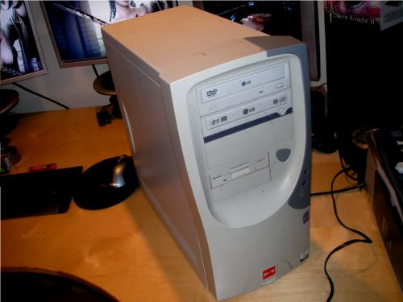
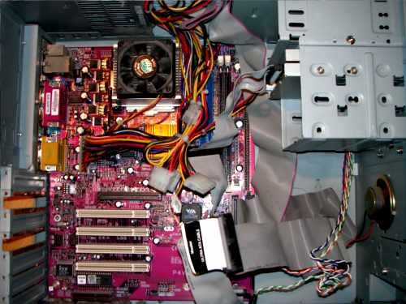
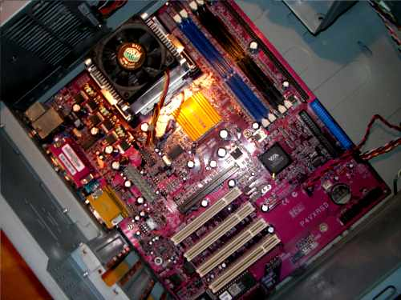
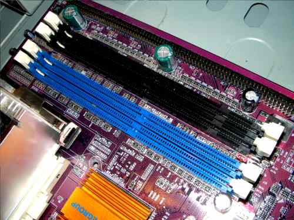
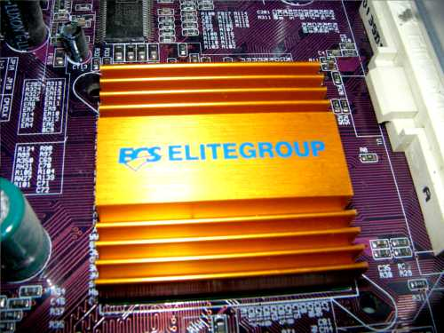
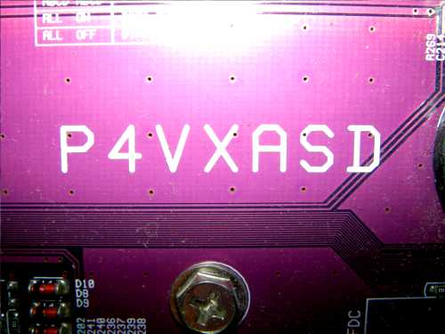
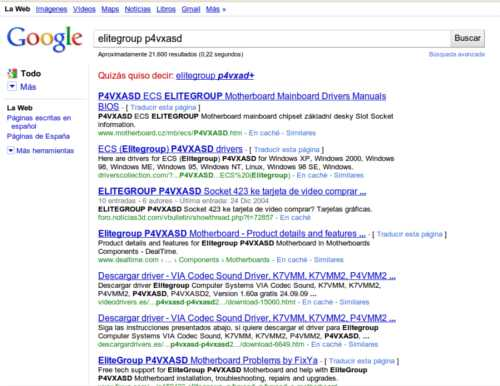
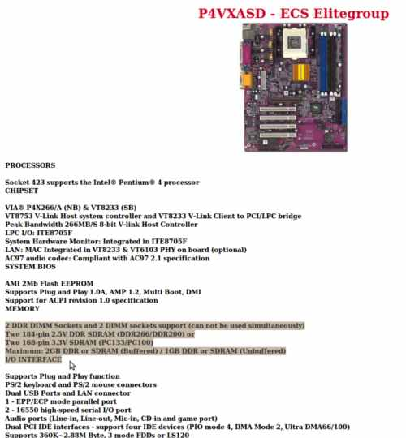
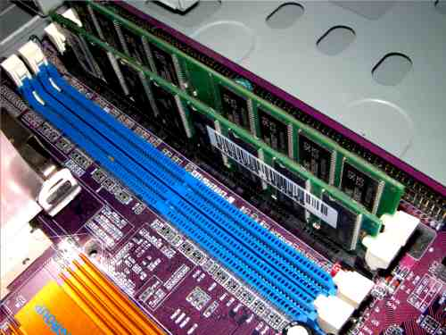
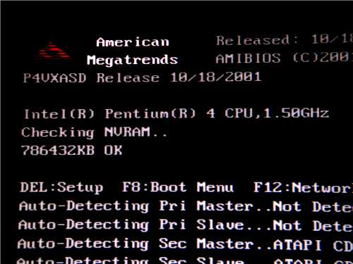

|
|---|
¿CUANTA MEMORIA RAM SE PUEDE INSTALAR EN UNA PLACA BASE?  Para comenzar vamos a retirar la tapa lateral a la torre y veremos la placa base de frente …  Lo primero que hay que hacer es limpiarlo, si tienes un compresor es fenomenal.- Para comenzar voy a retirar todos los cables conectados a la placa base ( Fajas IDE, Alimentación, Audio ) …

Una vez abrimos la caja lo primero que deberemos mirar son los sockets donde conectar los módulos de memoria … 
Estos dicen mucho al respecto sobre el tipo de memoria se le puede instalar a esta placa. Los dos azules solo tienen dos ranuras y estas hacen 184 pins lo que ya me dice que puedo instalar en esos dos sockets memorias DDR ( luego veremos los mhz ). Las dos negras tienen tres ranuras y estas hacen 164 pins lo que dice que tan solo puedo instalar modulos SDRAM sin ser DDR por norma mas lentas. Antiguamente se podían instalar memorias de varias frecuencias en las placas base de los 286, 386, 468, PI, PII, PIII, etc .. El funcionamiento no era del todo correcto y aveces podían ser inestables. Con la subida de potencia en los módulos de memoria ram actuales este método no es que no sea posible ya que puede funcionar ( no en todas las placas base ) pero nunca nos ofrecerá resultados fiables cuando estrujemos la maquina. Por lo tanto ya sabemos que le podemos instalar DDR SDRAM o SDRAM pero solo podemos incluir dos módulos ( no mucha memoria le podremos poner ). Sabido este pequeño gran detalle vamos a averiguar cuanta memoria le podemos instalar fijándonos en nuestra placa base. Por lo general la marca de nuestra placa base o viene serigrafiada en la placa o viene imprimida en el chipset. En este caso viene en el chipset …  Ahora ya sabemos que la marca de nuestra placa base es ( EliteGroup ), si buscamos por la placa base encontraremos serigrafiado el modelo … 
Como podemos ver el modelo de nuestra placa base es ( P4VXASD ). Llegados a este punto sabemos que tipo de módulos podemos instalarle a simple vista ( Muy útil si no tenemos Internet ) y por otro lado la marca y el modelo de la misma ( Para los que tenemos Internet ). Como el que no quiere la cosa vamos a insertar en Google la marca seguido del modelo y veremos lo siguiente …
 Al buscar la marca seguido del modelo por norma encontraremos entre los primeros resultados esquemas y drivers como lo que me ofrece el primer resultado de la búsqueda …  Como podemos ver esta placa base admite los dos tipos de memoria DDR SDRAM, SDRAM e incluso recomiendan que no se usen mezcladas. Los sockets azules de la placa base admiten memorias como mucho de 2.5V y DDR SDRAM de 266 o 200 Mhz. Por otra parte vemos que los dos sockets negros admiten memorias de como máximo 3.3V y de 133 o 100 Mhz. Usemos los módulos que usemos tenemos como capacidad máxima 2 Gb …
 Una vez instalados tan solo me falta instalarle la tarjeta gráfica para hacer una prueba y ver si nos la acepta de buenas a primeras, así que la voy a instalar y arrancaré la maquina a ver que nos dice la Bios del sistema …  Espero que este pequeño manual pueda ser de ayuda a todo el que le interese.-
|
Andaluzsoy |